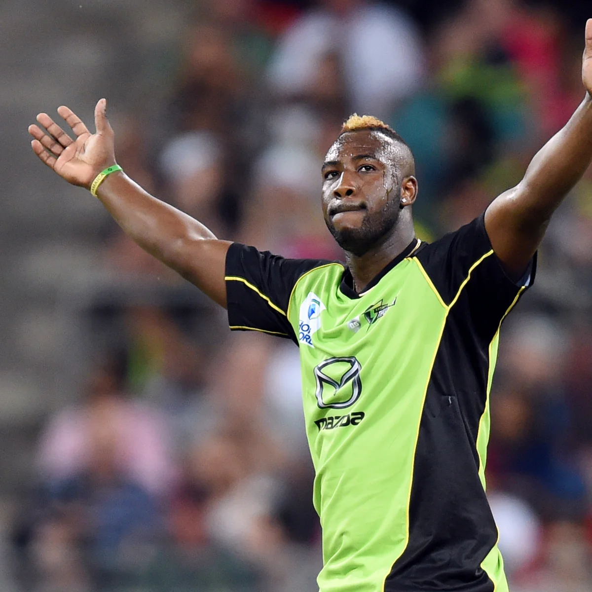
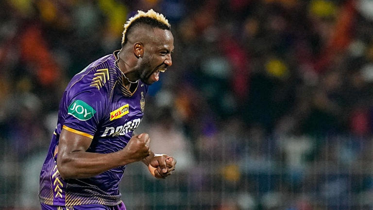
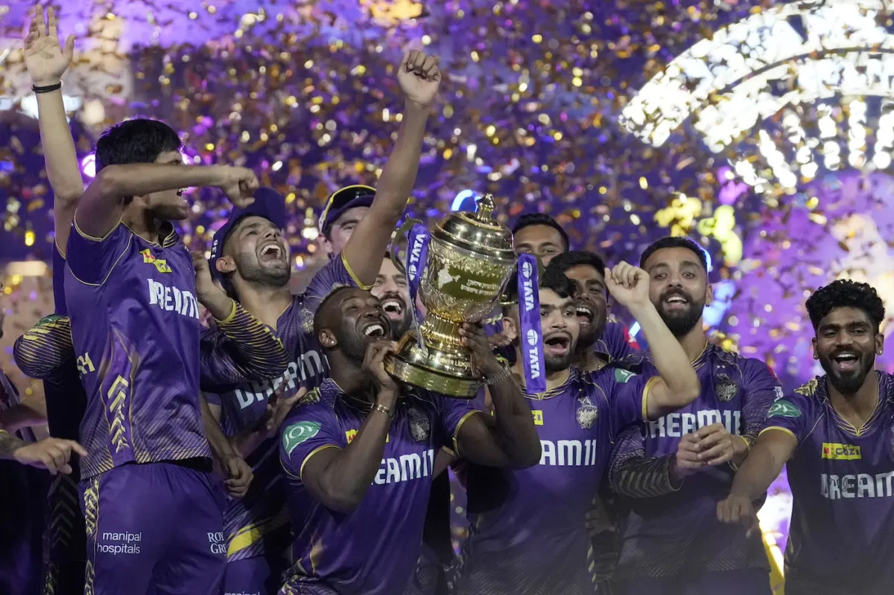
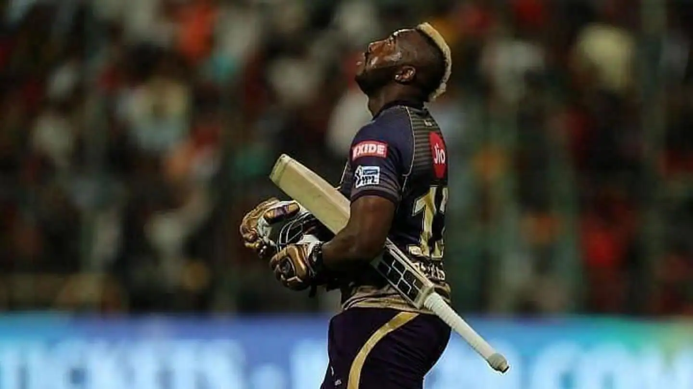
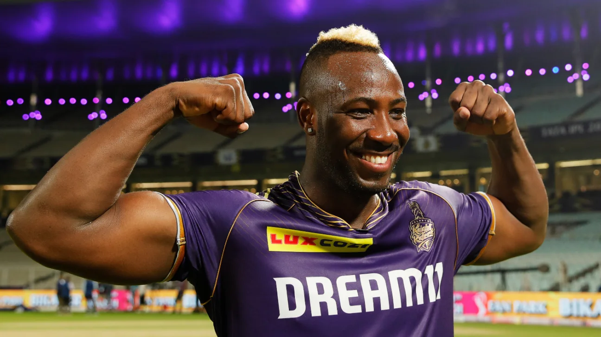

Gallery

Power Hitting
Russell's explosive batting in action

Fast Bowling
Russell delivering a quick delivery

Celebration
Russell's trademark celebration

Champion
Russell with IPL trophy

All-Round Performance
Russell making an impact with bat and ball

Portrait
Russell's intense focus